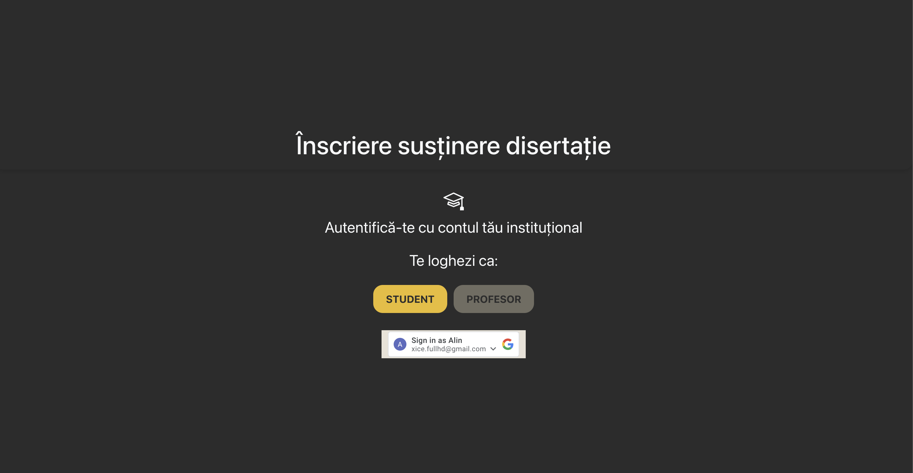
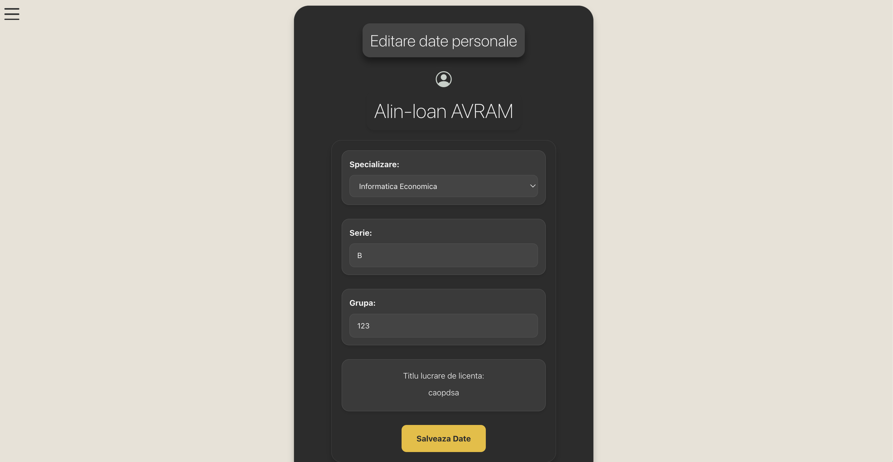
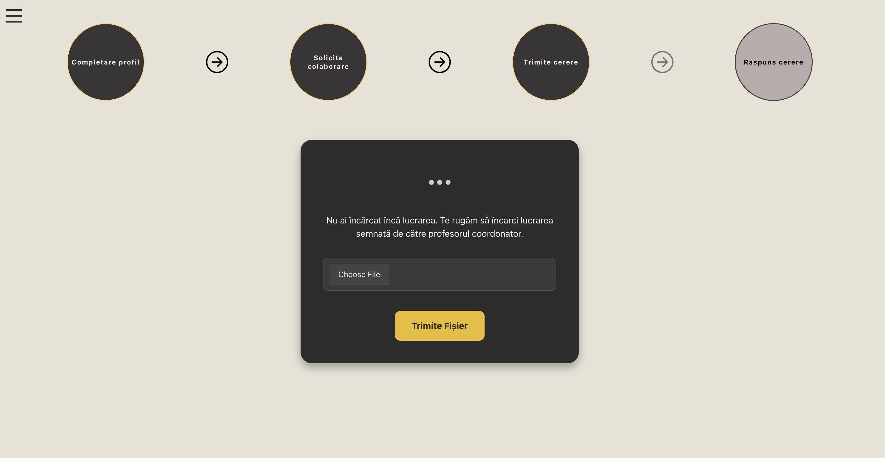
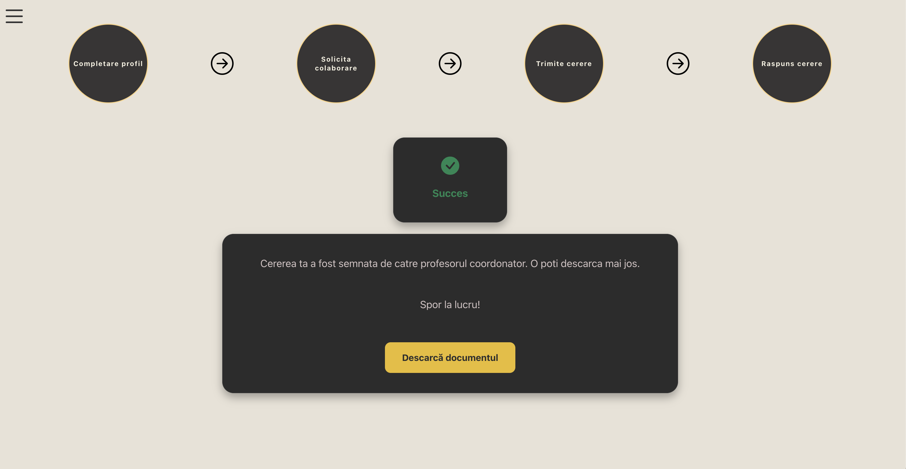
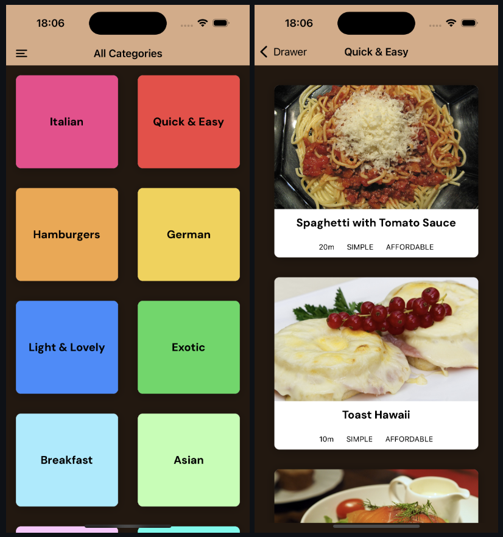
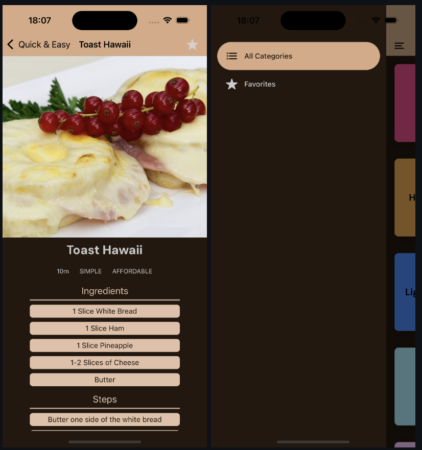
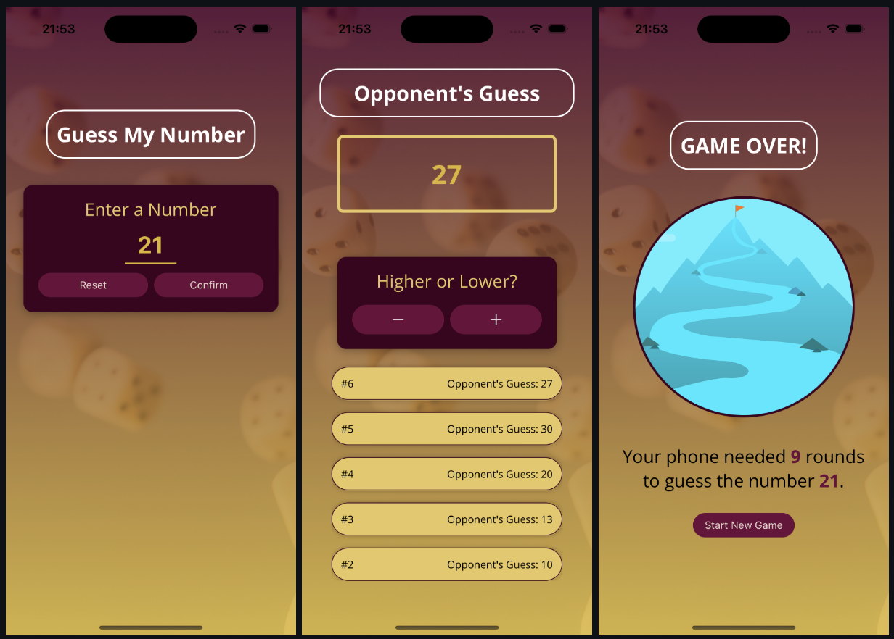
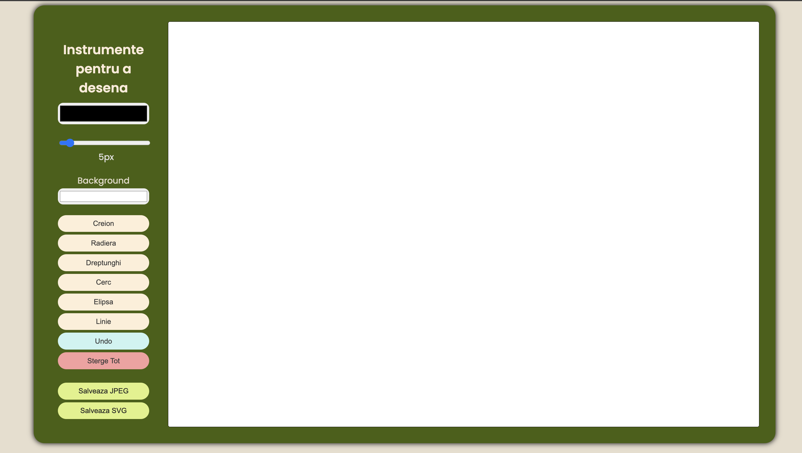
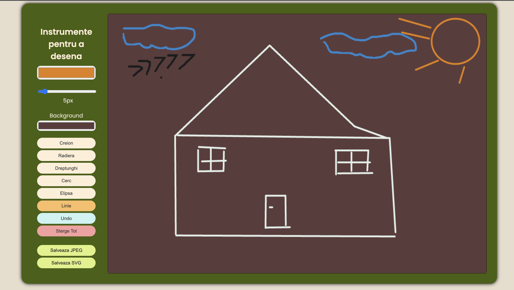

Hello There!
It's Avram Alin-Ioan and this is what i love to do!
Welcome to my portfolio! Here, you’ll find a showcase of my
programming projects, experience, and education. This site not
only highlights my technical skills but also reflects who I am as
an individual: passionate about learning, growth, and innovation.
I created this space to organize my work in a way that’s
accessible and inviting for everyone to explore.
About me
My name is Avram Alin Ioan, I was born on 21st October 2003, and I
live in Bucharest, Sector 4. I am a third-year student at the
Faculty of Cybernetics, Statistics, and Economic Informatics,
specializing in Economic Informatics, and I am intensely
passionate about programming and IT. Every day, I strive to learn
new things and enrich my knowledge regarding the technologies I
have already worked with.
I am a sociable and friendly individual who looks forward to
working in a dynamic team environment. I am eager to learn from
those with a stronger understanding of programming and
continuously improve my skills. I value collaboration and am
excited about the opportunity to grow and develop in a supportive
and innovative setting.
I am currently seeking an internship or part-time position
as a Software Developer. I am eager to apply my skills and
knowledge in a professional setting and contribute to the success
of a dynamic team.
Personal Projects
University Dissertation Collaboration Platform. A platform where
students can request collaborations with professors. Professors
can accept multiple students, review their papers, sign them,
and send them back. Built with JavaScript using React for the
frontend, Node.js for the backend, and MariaDB for the database.




React Native Meals App built for both IOS and Android platforms
with expo.It is styled using RN StyleSheet, the state is managed
with Context API and for the navigation i am using the React
Navigation library.


"Guess My Number" is a fun higher-or-lower game where your phone
tries to guess the number you're thinking of in as few attempts
as possible. The app features a beautiful, minimalistic design
with clean styling. It is fully responsive for both iOS and
Android and represents my first step into the mobile app
industry.

Browser-Based Drawing App. A web application inspired by
Microsoft Paint, allowing users to draw on a canvas using
various tools (rectangle, ellipse, circle, line). It also
features background customization and an undo function. Built
with HTML, CSS, and JavaScript.


Managing restaurant orders based on ingredient stocks" - I used
object-oriented programming in C++. This project includes a
console interface that manages customer orders.
Interactive menu in bash using the features of UNIX systems"
based on CSV files, different guitar models from 80s artists are
displayed in the terminal.
"Managing the database of a music store. - I used SQL and PL/SQL
to manage information and tables related to employees,
departments, suppliers, orders, and products.
An application for a video rental store. " - I used Visual
Studio Windows Forms in C# and created multiple scenes where the
client could view the rental list, the available tapes, and even
complete a rental form for a specified period.
Erasmus+ project "INFOROBOTICS" held in Spain, Granada. I delved
into MicroPython technology by developing a remote- controlled
car from scratch as part of a team. I was responsible for the
software part.
Oracle Course “Database Design and Programming with SQL”
Oracle Course “Database Programming with PL/SQL”
Cambridge CAE(“Advanced Certificate in English”) obtained with
the highest score.